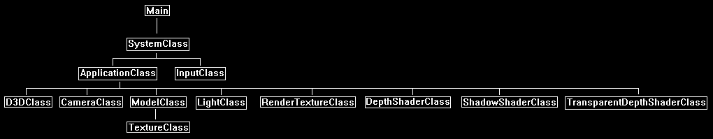

In this tutorial we will go over how to shadow map objects that use textures with alpha transparency.
The code will be written using DirectX 11 and HLSL.
This tutorial will build on the code from the directional shadow maps tutorial 43.
We will start by looking at the classic example of a tree that uses quads for leaves with a transparent leaf texture.

If we turn blending off you can see the quads that form the leaves.

The texture used in this example is the following:

Now this causes an issue with shadow mapping because with the current depth shader it would only have access to the quad geometry and would not have access to the transparency texture.
So, this would cause quads to be drawn as shadows instead of the leaves inside the transparency texture.

To deal with this issue we will need a second depth shader to render transparent objects, it will be the same as the regular depth shader except that we will provide it the transparency texture and discard pixels that are below a certain alpha value.
With this in place we will be able to render shadow maps that use transparency textures.

Framework
The framework is mostly the same as the directional shadow mapping tutorial, except that we have added one additional class named TransparentDepthShaderClass.

We will start the code section by looking at the transparent depth shader.
The transparent depth shader will just be the regular depth shader except that it is modified to handle a transparency texture for transparency lookups.
Transparentdepth.vs
The vertex shader for transparent depth is mostly the same as the regular depth shader.
However, we now additionally send through the texture coordinates into the pixel shader.
////////////////////////////////////////////////////////////////////////////////
// Filename: transparentdepth.vs
////////////////////////////////////////////////////////////////////////////////
/////////////
// GLOBALS //
/////////////
cbuffer MatrixBuffer
{
matrix worldMatrix;
matrix viewMatrix;
matrix projectionMatrix;
};
//////////////
// TYPEDEFS //
//////////////
struct VertexInputType
{
float4 position : POSITION;
float2 tex : TEXCOORD0;
};
struct PixelInputType
{
float4 position : SV_POSITION;
float4 depthPosition : TEXTURE0;
float2 tex : TEXCOORD1;
};
////////////////////////////////////////////////////////////////////////////////
// Vertex Shader
////////////////////////////////////////////////////////////////////////////////
PixelInputType TransparentDepthVertexShader(VertexInputType input)
{
PixelInputType output;
// Change the position vector to be 4 units for proper matrix calculations.
input.position.w = 1.0f;
// Calculate the position of the vertex against the world, view, and projection matrices.
output.position = mul(input.position, worldMatrix);
output.position = mul(output.position, viewMatrix);
output.position = mul(output.position, projectionMatrix);
// Store the position value in a second input value for depth value calculations.
output.depthPosition = output.position;
// Store the texture coordinates for the pixel shader.
output.tex = input.tex;
return output;
}
Transparentdepth.ps
////////////////////////////////////////////////////////////////////////////////
// Filename: transparentdepth.ps
////////////////////////////////////////////////////////////////////////////////
We have added a texture to the pixel shader.
We will also require a sampler to retrieve the texture data.
//////////////
// GLOBALS //
//////////////
Texture2D shaderTexture : register(t0);
SamplerState SampleType : register(s0);
//////////////
// TYPEDEFS //
//////////////
struct PixelInputType
{
float4 position : SV_POSITION;
float4 depthPosition : TEXTURE0;
float2 tex : TEXCOORD1;
};
////////////////////////////////////////////////////////////////////////////////
// Pixel Shader
////////////////////////////////////////////////////////////////////////////////
float4 TransparentDepthPixelShader(PixelInputType input) : SV_TARGET
{
float depthValue;
float4 color;
float4 textureColor;
We sample the transparency texture and determine if the alpha value is above a certain value.
If it is above a certain value then this is an opaque pixel that should be part of the shadow, and so we return its depth value.
If it is below that same value then we simply discard the pixel so it is not part of the shadow.
// Sample the pixel color from the texture using the sampler at this texture coordinate location.
textureColor = shaderTexture.Sample(SampleType, input.tex);
// Test based on the alpha value of the texture.
if(textureColor.a > 0.8f)
{
// Get the depth value of the pixel by dividing the Z pixel depth by the homogeneous W coordinate.
depthValue = input.depthPosition.z / input.depthPosition.w;
}
else
{
// Otherwise discard this pixel entirely.
discard;
}
color = float4(depthValue, depthValue, depthValue, 1.0f);
return color;
}
Transparentdepthshaderclass.h
The TransparentDepthShaderClass is the same as the DepthShaderClass except that it handles texture data.
////////////////////////////////////////////////////////////////////////////////
// Filename: transparentdepthshaderclass.h
////////////////////////////////////////////////////////////////////////////////
#ifndef _TRANSPARENTDEPTHSHADERCLASS_H_
#define _TRANSPARENTDEPTHSHADERCLASS_H_
//////////////
// INCLUDES //
//////////////
#include <d3d11.h>
#include <d3dcompiler.h>
#include <directxmath.h>
#include <fstream>
using namespace DirectX;
using namespace std;
////////////////////////////////////////////////////////////////////////////////
// Class name: TransparentDepthShaderClass
////////////////////////////////////////////////////////////////////////////////
class TransparentDepthShaderClass
{
private:
struct MatrixBufferType
{
XMMATRIX world;
XMMATRIX view;
XMMATRIX projection;
};
public:
TransparentDepthShaderClass();
TransparentDepthShaderClass(const TransparentDepthShaderClass&);
~TransparentDepthShaderClass();
bool Initialize(ID3D11Device*, HWND);
void Shutdown();
bool Render(ID3D11DeviceContext*, int, XMMATRIX, XMMATRIX, XMMATRIX, ID3D11ShaderResourceView*);
private:
bool InitializeShader(ID3D11Device*, HWND, WCHAR*, WCHAR*);
void ShutdownShader();
void OutputShaderErrorMessage(ID3D10Blob*, HWND, WCHAR*);
bool SetShaderParameters(ID3D11DeviceContext*, XMMATRIX, XMMATRIX, XMMATRIX, ID3D11ShaderResourceView*);
void RenderShader(ID3D11DeviceContext*, int);
private:
ID3D11VertexShader* m_vertexShader;
ID3D11PixelShader* m_pixelShader;
ID3D11InputLayout* m_layout;
ID3D11Buffer* m_matrixBuffer;
ID3D11SamplerState* m_sampleState;
};
#endif
Transparentdepthshaderclass.cpp
////////////////////////////////////////////////////////////////////////////////
// Filename: transparentdepthshaderclass.cpp
////////////////////////////////////////////////////////////////////////////////
#include "transparentdepthshaderclass.h"
TransparentDepthShaderClass::TransparentDepthShaderClass()
{
m_vertexShader = 0;
m_pixelShader = 0;
m_layout = 0;
m_matrixBuffer = 0;
m_sampleState = 0;
}
TransparentDepthShaderClass::TransparentDepthShaderClass(const TransparentDepthShaderClass& other)
{
}
TransparentDepthShaderClass::~TransparentDepthShaderClass()
{
}
bool TransparentDepthShaderClass::Initialize(ID3D11Device* device, HWND hwnd)
{
wchar_t vsFilename[128], psFilename[128];
int error;
bool result;
Load the transparent depth HLSL files.
// Set the filename of the vertex shader.
error = wcscpy_s(vsFilename, 128, L"../Engine/transparentdepth.vs");
if(error != 0)
{
return false;
}
// Set the filename of the pixel shader.
error = wcscpy_s(psFilename, 128, L"../Engine/transparentdepth.ps");
if(error != 0)
{
return false;
}
// Initialize the vertex and pixel shaders.
result = InitializeShader(device, hwnd, vsFilename, psFilename);
if(!result)
{
return false;
}
return true;
}
void TransparentDepthShaderClass::Shutdown()
{
// Shutdown the vertex and pixel shaders as well as the related objects.
ShutdownShader();
return;
}
The shader takes in a transparency texture input.
bool TransparentDepthShaderClass::Render(ID3D11DeviceContext* deviceContext, int indexCount, XMMATRIX worldMatrix, XMMATRIX viewMatrix, XMMATRIX projectionMatrix,
ID3D11ShaderResourceView* texture)
{
bool result;
// Set the shader parameters that it will use for rendering.
result = SetShaderParameters(deviceContext, worldMatrix, viewMatrix, projectionMatrix, texture);
if(!result)
{
return false;
}
// Now render the prepared buffers with the shader.
RenderShader(deviceContext, indexCount);
return true;
}
bool TransparentDepthShaderClass::InitializeShader(ID3D11Device* device, HWND hwnd, WCHAR* vsFilename, WCHAR* psFilename)
{
HRESULT result;
ID3D10Blob* errorMessage;
ID3D10Blob* vertexShaderBuffer;
ID3D10Blob* pixelShaderBuffer;
D3D11_INPUT_ELEMENT_DESC polygonLayout[2];
unsigned int numElements;
D3D11_BUFFER_DESC matrixBufferDesc;
D3D11_SAMPLER_DESC samplerDesc;
// Initialize the pointers this function will use to null.
errorMessage = 0;
vertexShaderBuffer = 0;
pixelShaderBuffer = 0;
Load the vertex shader.
// Compile the vertex shader code.
result = D3DCompileFromFile(vsFilename, NULL, NULL, "TransparentDepthVertexShader", "vs_5_0", D3D10_SHADER_ENABLE_STRICTNESS, 0,
&vertexShaderBuffer, &errorMessage);
if(FAILED(result))
{
// If the shader failed to compile it should have writen something to the error message.
if(errorMessage)
{
OutputShaderErrorMessage(errorMessage, hwnd, vsFilename);
}
// If there was nothing in the error message then it simply could not find the shader file itself.
else
{
MessageBox(hwnd, vsFilename, L"Missing Shader File", MB_OK);
}
return false;
}
Load the pixel shader.
// Compile the pixel shader code.
result = D3DCompileFromFile(psFilename, NULL, NULL, "TransparentDepthPixelShader", "ps_5_0", D3D10_SHADER_ENABLE_STRICTNESS, 0,
&pixelShaderBuffer, &errorMessage);
if(FAILED(result))
{
// If the shader failed to compile it should have writen something to the error message.
if(errorMessage)
{
OutputShaderErrorMessage(errorMessage, hwnd, psFilename);
}
// If there was nothing in the error message then it simply could not find the file itself.
else
{
MessageBox(hwnd, psFilename, L"Missing Shader File", MB_OK);
}
return false;
}
// Create the vertex shader from the buffer.
result = device->CreateVertexShader(vertexShaderBuffer->GetBufferPointer(), vertexShaderBuffer->GetBufferSize(), NULL, &m_vertexShader);
if(FAILED(result))
{
return false;
}
// Create the pixel shader from the buffer.
result = device->CreatePixelShader(pixelShaderBuffer->GetBufferPointer(), pixelShaderBuffer->GetBufferSize(), NULL, &m_pixelShader);
if(FAILED(result))
{
return false;
}
// Create the vertex input layout description.
polygonLayout[0].SemanticName = "POSITION";
polygonLayout[0].SemanticIndex = 0;
polygonLayout[0].Format = DXGI_FORMAT_R32G32B32_FLOAT;
polygonLayout[0].InputSlot = 0;
polygonLayout[0].AlignedByteOffset = 0;
polygonLayout[0].InputSlotClass = D3D11_INPUT_PER_VERTEX_DATA;
polygonLayout[0].InstanceDataStepRate = 0;
Add the texture coordinates to the layout description.
polygonLayout[1].SemanticName = "TEXCOORD";
polygonLayout[1].SemanticIndex = 0;
polygonLayout[1].Format = DXGI_FORMAT_R32G32_FLOAT;
polygonLayout[1].InputSlot = 0;
polygonLayout[1].AlignedByteOffset = D3D11_APPEND_ALIGNED_ELEMENT;
polygonLayout[1].InputSlotClass = D3D11_INPUT_PER_VERTEX_DATA;
polygonLayout[1].InstanceDataStepRate = 0;
// Get a count of the elements in the layout.
numElements = sizeof(polygonLayout) / sizeof(polygonLayout[0]);
// Create the vertex input layout.
result = device->CreateInputLayout(polygonLayout, numElements, vertexShaderBuffer->GetBufferPointer(), vertexShaderBuffer->GetBufferSize(), &m_layout);
if(FAILED(result))
{
return false;
}
// Release the vertex shader buffer and pixel shader buffer since they are no longer needed.
vertexShaderBuffer->Release();
vertexShaderBuffer = 0;
pixelShaderBuffer->Release();
pixelShaderBuffer = 0;
// Setup the description of the dynamic matrix constant buffer that is in the vertex shader.
matrixBufferDesc.Usage = D3D11_USAGE_DYNAMIC;
matrixBufferDesc.ByteWidth = sizeof(MatrixBufferType);
matrixBufferDesc.BindFlags = D3D11_BIND_CONSTANT_BUFFER;
matrixBufferDesc.CPUAccessFlags = D3D11_CPU_ACCESS_WRITE;
matrixBufferDesc.MiscFlags = 0;
matrixBufferDesc.StructureByteStride = 0;
// Create the constant buffer pointer so we can access the vertex shader constant buffer from within this class.
result = device->CreateBuffer(&matrixBufferDesc, NULL, &m_matrixBuffer);
if(FAILED(result))
{
return false;
}
We will need a sampler for sampling the transparency texture in the transparency depth pixel shader.
// Create a texture sampler state description.
samplerDesc.Filter = D3D11_FILTER_MIN_MAG_MIP_LINEAR;
samplerDesc.AddressU = D3D11_TEXTURE_ADDRESS_WRAP;
samplerDesc.AddressV = D3D11_TEXTURE_ADDRESS_WRAP;
samplerDesc.AddressW = D3D11_TEXTURE_ADDRESS_WRAP;
samplerDesc.MipLODBias = 0.0f;
samplerDesc.MaxAnisotropy = 1;
samplerDesc.ComparisonFunc = D3D11_COMPARISON_ALWAYS;
samplerDesc.BorderColor[0] = 0;
samplerDesc.BorderColor[1] = 0;
samplerDesc.BorderColor[2] = 0;
samplerDesc.BorderColor[3] = 0;
samplerDesc.MinLOD = 0;
samplerDesc.MaxLOD = D3D11_FLOAT32_MAX;
// Create the texture sampler state.
result = device->CreateSamplerState(&samplerDesc, &m_sampleState);
if(FAILED(result))
{
return false;
}
return true;
}
void TransparentDepthShaderClass::ShutdownShader()
{
// Release the sampler state.
if(m_sampleState)
{
m_sampleState->Release();
m_sampleState = 0;
}
// Release the matrix constant buffer.
if(m_matrixBuffer)
{
m_matrixBuffer->Release();
m_matrixBuffer = 0;
}
// Release the layout.
if(m_layout)
{
m_layout->Release();
m_layout = 0;
}
// Release the pixel shader.
if(m_pixelShader)
{
m_pixelShader->Release();
m_pixelShader = 0;
}
// Release the vertex shader.
if(m_vertexShader)
{
m_vertexShader->Release();
m_vertexShader = 0;
}
return;
}
void TransparentDepthShaderClass::OutputShaderErrorMessage(ID3D10Blob* errorMessage, HWND hwnd, WCHAR* shaderFilename)
{
char* compileErrors;
unsigned long long bufferSize, i;
ofstream fout;
// Get a pointer to the error message text buffer.
compileErrors = (char*)(errorMessage->GetBufferPointer());
// Get the length of the message.
bufferSize = errorMessage->GetBufferSize();
// Open a file to write the error message to.
fout.open("shader-error.txt");
// Write out the error message.
for(i=0; i<bufferSize; i++)
{
fout << compileErrors[i];
}
// Close the file.
fout.close();
// Release the error message.
errorMessage->Release();
errorMessage = 0;
// Pop a message up on the screen to notify the user to check the text file for compile errors.
MessageBox(hwnd, L"Error compiling shader. Check shader-error.txt for message.", shaderFilename, MB_OK);
return;
}
bool TransparentDepthShaderClass::SetShaderParameters(ID3D11DeviceContext* deviceContext, XMMATRIX worldMatrix, XMMATRIX viewMatrix, XMMATRIX projectionMatrix,
ID3D11ShaderResourceView* texture)
{
HRESULT result;
D3D11_MAPPED_SUBRESOURCE mappedResource;
unsigned int bufferNumber;
MatrixBufferType* dataPtr;
// Transpose the matrices to prepare them for the shader.
worldMatrix = XMMatrixTranspose(worldMatrix);
viewMatrix = XMMatrixTranspose(viewMatrix);
projectionMatrix = XMMatrixTranspose(projectionMatrix);
// Lock the constant buffer so it can be written to.
result = deviceContext->Map(m_matrixBuffer, 0, D3D11_MAP_WRITE_DISCARD, 0, &mappedResource);
if(FAILED(result))
{
return false;
}
// Get a pointer to the data in the constant buffer.
dataPtr = (MatrixBufferType*)mappedResource.pData;
// Copy the matrices into the constant buffer.
dataPtr->world = worldMatrix;
dataPtr->view = viewMatrix;
dataPtr->projection = projectionMatrix;
// Unlock the constant buffer.
deviceContext->Unmap(m_matrixBuffer, 0);
// Set the position of the constant buffer in the vertex shader.
bufferNumber = 0;
// Now set the constant buffer in the vertex shader with the updated values.
deviceContext->VSSetConstantBuffers(bufferNumber, 1, &m_matrixBuffer);
The transparent depth shader will use the alpha channel of the input texture to determine if a pixel should be shadowed or not.
// Set shader texture resource in the pixel shader.
deviceContext->PSSetShaderResources(0, 1, &texture);
return true;
}
void TransparentDepthShaderClass::RenderShader(ID3D11DeviceContext* deviceContext, int indexCount)
{
// Set the vertex input layout.
deviceContext->IASetInputLayout(m_layout);
// Set the vertex and pixel shaders that will be used to render the geometry.
deviceContext->VSSetShader(m_vertexShader, NULL, 0);
deviceContext->PSSetShader(m_pixelShader, NULL, 0);
Set the sampler in the pixel shader.
// Set the sampler state in the pixel shader.
deviceContext->PSSetSamplers(0, 1, &m_sampleState);
// Render the geometry.
deviceContext->DrawIndexed(indexCount, 0, 0);
return;
}
Applicationclass.h
////////////////////////////////////////////////////////////////////////////////
// Filename: applicationclass.h
////////////////////////////////////////////////////////////////////////////////
#ifndef _APPLICATIONCLASS_H_
#define _APPLICATIONCLASS_H_
/////////////
// GLOBALS //
/////////////
const bool FULL_SCREEN = false;
const bool VSYNC_ENABLED = true;
const float SCREEN_NEAR = 0.3f;
const float SCREEN_DEPTH = 1000.0f;
const int SHADOWMAP_WIDTH = 1024;
const int SHADOWMAP_HEIGHT = 1024;
const float SHADOWMAP_NEAR = 1.0f;
const float SHADOWMAP_DEPTH = 50.0f;
///////////////////////
// MY CLASS INCLUDES //
///////////////////////
#include "d3dclass.h"
#include "inputclass.h"
#include "cameraclass.h"
#include "modelclass.h"
#include "lightclass.h"
#include "rendertextureclass.h"
#include "depthshaderclass.h"
#include "transparentdepthshaderclass.h"
#include "shadowshaderclass.h"
////////////////////////////////////////////////////////////////////////////////
// Class name: ApplicationClass
////////////////////////////////////////////////////////////////////////////////
class ApplicationClass
{
public:
ApplicationClass();
ApplicationClass(const ApplicationClass&);
~ApplicationClass();
bool Initialize(int, int, HWND);
void Shutdown();
bool Frame(InputClass*);
private:
bool RenderSceneToTexture();
bool Render();
private:
D3DClass* m_Direct3D;
CameraClass* m_Camera;
ModelClass* m_GroundModel;
We have added a model for the tree which will be split into two parts for rendering purposes (opaque trunk part and transparent leaf part).
ModelClass *m_TreeTrunkModel, *m_TreeLeafModel;
LightClass* m_Light;
RenderTextureClass* m_RenderTexture;
DepthShaderClass* m_DepthShader;
The new transparent depth shader object is added here.
TransparentDepthShaderClass* m_TransparentDepthShader;
ShadowShaderClass* m_ShadowShader;
float m_shadowMapBias;
};
#endif
Applicationclass.cpp
////////////////////////////////////////////////////////////////////////////////
// Filename: applicationclass.cpp
////////////////////////////////////////////////////////////////////////////////
#include "applicationclass.h"
We initialize the new class objects to null in the class constructor.
ApplicationClass::ApplicationClass()
{
m_Direct3D = 0;
m_Camera = 0;
m_GroundModel = 0;
m_TreeTrunkModel = 0;
m_TreeLeafModel = 0;
m_Light = 0;
m_RenderTexture = 0;
m_DepthShader = 0;
m_TransparentDepthShader = 0;
m_ShadowShader = 0;
}
ApplicationClass::ApplicationClass(const ApplicationClass& other)
{
}
ApplicationClass::~ApplicationClass()
{
}
bool ApplicationClass::Initialize(int screenWidth, int screenHeight, HWND hwnd)
{
char modelFilename[128], textureFilename[128];
bool result;
// Create and initialize the Direct3D object.
m_Direct3D = new D3DClass;
result = m_Direct3D->Initialize(screenWidth, screenHeight, VSYNC_ENABLED, hwnd, FULL_SCREEN, SCREEN_DEPTH, SCREEN_NEAR);
if(!result)
{
MessageBox(hwnd, L"Could not initialize Direct3D.", L"Error", MB_OK);
return false;
}
// Create and initialize the camera object.
m_Camera = new CameraClass;
m_Camera->SetPosition(0.0f, 7.0f, -11.0f);
m_Camera->SetRotation(20.0f, 0.0f, 0.0f);
m_Camera->Render();
The ground model now uses the dirt texture for this tutorial.
// Create and initialize the ground model object.
m_GroundModel = new ModelClass;
strcpy_s(modelFilename, "../Engine/data/plane01.txt");
strcpy_s(textureFilename, "../Engine/data/dirt01.tga");
result = m_GroundModel->Initialize(m_Direct3D->GetDevice(), m_Direct3D->GetDeviceContext(), modelFilename, textureFilename);
if(!result)
{
MessageBox(hwnd, L"Could not initialize the ground model object.", L"Error", MB_OK);
return false;
}
This is where we setup the opaque tree trunk part of the model.
// Create and initialize the tree trunk model object.
m_TreeTrunkModel = new ModelClass;
strcpy_s(modelFilename, "../Engine/data/trunk001.txt");
strcpy_s(textureFilename, "../Engine/data/trunk001.tga");
result = m_TreeTrunkModel ->Initialize(m_Direct3D->GetDevice(), m_Direct3D->GetDeviceContext(), modelFilename, textureFilename);
if(!result)
{
MessageBox(hwnd, L"Could not initialize the tree trunk model object.", L"Error", MB_OK);
return false;
}
This is where we setup the transparent tree leaf part of the model.
// Create and initialize the tree leaf model object.
m_TreeLeafModel = new ModelClass;
strcpy_s(modelFilename, "../Engine/data/leaf001.txt");
strcpy_s(textureFilename, "../Engine/data/leaf001.tga");
result = m_TreeLeafModel ->Initialize(m_Direct3D->GetDevice(), m_Direct3D->GetDeviceContext(), modelFilename, textureFilename);
if(!result)
{
MessageBox(hwnd, L"Could not initialize the tree leaf model object.", L"Error", MB_OK);
return false;
}
// Create and initialize the light object.
m_Light = new LightClass;
m_Light->SetAmbientColor(0.15f, 0.15f, 0.15f, 1.0f);
m_Light->SetDiffuseColor(1.0f, 1.0f, 1.0f, 1.0f);
We try to generate a fairly tight shadow mapping area around the scene to increase the detail of the shadow map.
For this tutorial roughly 20.0f is just outside the boundaries of the ground model.
m_Light->GenerateOrthoMatrix(20.0f, SHADOWMAP_NEAR, SHADOWMAP_DEPTH);
// Create and initialize the render to texture object.
m_RenderTexture = new RenderTextureClass;
result = m_RenderTexture->Initialize(m_Direct3D->GetDevice(), SHADOWMAP_WIDTH, SHADOWMAP_HEIGHT, SHADOWMAP_DEPTH, SHADOWMAP_NEAR, 1);
if(!result)
{
MessageBox(hwnd, L"Could not initialize the render texture object.", L"Error", MB_OK);
return false;
}
// Create and initialize the depth shader object.
m_DepthShader = new DepthShaderClass;
result = m_DepthShader->Initialize(m_Direct3D->GetDevice(), hwnd);
if(!result)
{
MessageBox(hwnd, L"Could not initialize the depth shader object.", L"Error", MB_OK);
return false;
}
Here we initialize and create the new transparent depth shader class object.
// Create and initialize the transparent depth shader object.
m_TransparentDepthShader = new TransparentDepthShaderClass;
result = m_TransparentDepthShader->Initialize(m_Direct3D->GetDevice(), hwnd);
if(!result)
{
MessageBox(hwnd, L"Could not initialize the transparent depth shader object.", L"Error", MB_OK);
return false;
}
// Create and initialize the shadow shader object.
m_ShadowShader = new ShadowShaderClass;
result = m_ShadowShader->Initialize(m_Direct3D->GetDevice(), hwnd);
if(!result)
{
MessageBox(hwnd, L"Could not initialize the shadow shader object.", L"Error", MB_OK);
return false;
}
// Set the shadow map bias to fix the floating point precision issues (shadow acne/lines artifacts).
m_shadowMapBias = 0.0022f;
return true;
}
We release the new class objects in the Shutdown function.
void ApplicationClass::Shutdown()
{
// Release the shadow shader object.
if(m_ShadowShader)
{
m_ShadowShader->Shutdown();
delete m_ShadowShader;
m_ShadowShader = 0;
}
// Release the transparent depth shader object.
if(m_TransparentDepthShader)
{
m_TransparentDepthShader->Shutdown();
delete m_TransparentDepthShader;
m_TransparentDepthShader = 0;
}
// Release the depth shader object.
if(m_DepthShader)
{
m_DepthShader->Shutdown();
delete m_DepthShader;
m_DepthShader = 0;
}
// Release the render texture object.
if(m_RenderTexture)
{
m_RenderTexture->Shutdown();
delete m_RenderTexture;
m_RenderTexture = 0;
}
// Release the light object.
if(m_Light)
{
delete m_Light;
m_Light = 0;
}
// Release the tree leaf model object.
if(m_TreeLeafModel)
{
m_TreeLeafModel->Shutdown();
delete m_TreeLeafModel;
m_TreeLeafModel = 0;
}
// Release the tree trunk model object.
if(m_TreeTrunkModel)
{
m_TreeTrunkModel->Shutdown();
delete m_TreeTrunkModel;
m_TreeTrunkModel = 0;
}
// Release the ground model object.
if(m_GroundModel)
{
m_GroundModel->Shutdown();
delete m_GroundModel;
m_GroundModel = 0;
}
// Release the camera object.
if(m_Camera)
{
delete m_Camera;
m_Camera = 0;
}
// Release the Direct3D object.
if(m_Direct3D)
{
m_Direct3D->Shutdown();
delete m_Direct3D;
m_Direct3D = 0;
}
return;
}
bool ApplicationClass::Frame(InputClass* Input)
{
static float lightAngle = 270.0f;
static float lightPosX = 9.0f;
float radians;
float frameTime;
bool result;
// Check if the user pressed escape and wants to exit the application.
if(Input->IsEscapePressed())
{
return false;
}
// Set the frame time manually assumming 60 fps.
frameTime = 10.0f;
// Update the position of the light each frame.
lightPosX -= 0.003f * frameTime;
// Update the angle of the light each frame.
lightAngle -= 0.03f * frameTime;
if(lightAngle < 90.0f)
{
lightAngle = 270.0f;
// Reset the light position also.
lightPosX = 9.0f;
}
radians = lightAngle * 0.0174532925f;
// Update the direction of the light.
m_Light->SetDirection(sinf(radians), cosf(radians), 0.0f);
// Set the position and lookat for the light.
m_Light->SetPosition(lightPosX, 10.0f, 1.0f);
m_Light->SetLookAt(-lightPosX, 0.0f, 2.0f);
m_Light->GenerateViewMatrix();
// Render the scene depth to the render texture.
result = RenderSceneToTexture();
if(!result)
{
return false;
}
// Render the final graphics scene.
result = Render();
if(!result)
{
return false;
}
return true;
}
bool ApplicationClass::RenderSceneToTexture()
{
XMMATRIX worldMatrix, scaleMatrix, translateMatrix, lightViewMatrix, lightOrthoMatrix;
bool result;
// Set the render target to be the render to texture. Also clear the render to texture.
m_RenderTexture->SetRenderTarget(m_Direct3D->GetDeviceContext());
m_RenderTexture->ClearRenderTarget(m_Direct3D->GetDeviceContext(), 0.0f, 0.0f, 0.0f, 1.0f);
// Get the view and orthographic matrices from the light object.
m_Light->GetViewMatrix(lightViewMatrix);
m_Light->GetOrthoMatrix(lightOrthoMatrix);
// Setup the translation matrix for the tree model.
scaleMatrix = XMMatrixScaling(0.1f, 0.1f, 0.1f);
translateMatrix = XMMatrixTranslation(0.0f, 1.0f, 0.0f);
worldMatrix = XMMatrixMultiply(scaleMatrix, translateMatrix);
First render the opaque parts of the trunk (trunk and branches) using the regular depth shader.
// Render the tree trunk model using the depth shader.
m_TreeTrunkModel->Render(m_Direct3D->GetDeviceContext());
result = m_DepthShader->Render(m_Direct3D->GetDeviceContext(), m_TreeTrunkModel->GetIndexCount(), worldMatrix, lightViewMatrix, lightOrthoMatrix);
if(!result)
{
return false;
}
Here is the key part!
We render the transparent parts of the tree using the transparent depth shader and the transparency texture onto the same render to texture object.
// Render the tree leaf model using the transparent depth shader.
m_TreeLeafModel->Render(m_Direct3D->GetDeviceContext());
result = m_TransparentDepthShader->Render(m_Direct3D->GetDeviceContext(), m_TreeLeafModel->GetIndexCount(), worldMatrix, lightViewMatrix, lightOrthoMatrix,
m_TreeLeafModel->GetTexture());
if(!result)
{
return false;
}
And finally render the ground model as normal using the regular depth shader.
// Setup the translation matrix for the ground model.
scaleMatrix = XMMatrixScaling(2.0f, 2.0f, 2.0f);
translateMatrix = XMMatrixTranslation(0.0f, 1.0f, 0.0f);
worldMatrix = XMMatrixMultiply(scaleMatrix, translateMatrix);
// Render the ground model using the depth shader.
m_GroundModel->Render(m_Direct3D->GetDeviceContext());
result = m_DepthShader->Render(m_Direct3D->GetDeviceContext(), m_GroundModel->GetIndexCount(), worldMatrix, lightViewMatrix, lightOrthoMatrix);
if(!result)
{
return false;
}
// Reset the render target back to the original back buffer and not the render to texture anymore. Also reset the viewport back to the original.
m_Direct3D->SetBackBufferRenderTarget();
m_Direct3D->ResetViewport();
return true;
}
bool ApplicationClass::Render()
{
XMMATRIX worldMatrix, viewMatrix, projectionMatrix, lightViewMatrix, lightOrthoMatrix, scaleMatrix, translateMatrix;
bool result;
// Clear the buffers to begin the scene.
m_Direct3D->BeginScene(0.0f, 0.5f, 0.8f, 1.0f);
// Get the world, view, and projection matrices from the camera and d3d objects.
m_Direct3D->GetWorldMatrix(worldMatrix);
m_Camera->GetViewMatrix(viewMatrix);
m_Direct3D->GetProjectionMatrix(projectionMatrix);
// Get the view and orthographic matrices from the light object.
m_Light->GetViewMatrix(lightViewMatrix);
m_Light->GetOrthoMatrix(lightOrthoMatrix);
The ground model is rendered with the shadow shader as normal.
// Setup the translation matrix for the ground model.
scaleMatrix = XMMatrixScaling(2.0f, 2.0f, 2.0f);
translateMatrix = XMMatrixTranslation(0.0f, 1.0f, 0.0f);
worldMatrix = XMMatrixMultiply(scaleMatrix, translateMatrix);
// Render the ground model using the shadow shader.
m_GroundModel->Render(m_Direct3D->GetDeviceContext());
result = m_ShadowShader->Render(m_Direct3D->GetDeviceContext(), m_GroundModel->GetIndexCount(), worldMatrix, viewMatrix, projectionMatrix, lightViewMatrix, lightOrthoMatrix,
m_GroundModel->GetTexture(), m_RenderTexture->GetShaderResourceView(), m_Light->GetAmbientColor(), m_Light->GetDiffuseColor(), m_Light->GetDirection(), m_shadowMapBias);
if(!result)
{
return false;
}
The tree model is rendered in two parts using the regular shadow shader.
First the opaque parts are drawn, and then the transparent parts are drawn after that.
However, when we render the transparent parts, we enable alpha blending for the transparent shadows to work to complete the effect.
// Setup the translation matrix for the tree model.
scaleMatrix = XMMatrixScaling(0.1f, 0.1f, 0.1f);
translateMatrix = XMMatrixTranslation(0.0f, 1.0f, 0.0f);
worldMatrix = XMMatrixMultiply(scaleMatrix, translateMatrix);
// Render the tree trunk model using the shadow shader.
m_TreeTrunkModel->Render(m_Direct3D->GetDeviceContext());
result = m_ShadowShader->Render(m_Direct3D->GetDeviceContext(), m_TreeTrunkModel->GetIndexCount(), worldMatrix, viewMatrix, projectionMatrix, lightViewMatrix, lightOrthoMatrix,
m_TreeTrunkModel->GetTexture(), m_RenderTexture->GetShaderResourceView(), m_Light->GetAmbientColor(), m_Light->GetDiffuseColor(), m_Light->GetDirection(), m_shadowMapBias);
if(!result)
{
return false;
}
// Enable blending for rendering the tree leaves as it uses alpha transparency.
m_Direct3D->EnableAlphaBlending();
// Render the tree leaf model using the shadow shader.
m_TreeLeafModel->Render(m_Direct3D->GetDeviceContext());
result = m_ShadowShader->Render(m_Direct3D->GetDeviceContext(), m_TreeLeafModel->GetIndexCount(), worldMatrix, viewMatrix, projectionMatrix, lightViewMatrix, lightOrthoMatrix,
m_TreeLeafModel->GetTexture(), m_RenderTexture->GetShaderResourceView(), m_Light->GetAmbientColor(), m_Light->GetDiffuseColor(), m_Light->GetDirection(), m_shadowMapBias);
if(!result)
{
return false;
}
// Disable the alpha blending.
m_Direct3D->DisableAlphaBlending();
// Present the rendered scene to the screen.
m_Direct3D->EndScene();
return true;
}
Summary
With a transparent depth shader, we can now use transparency textures with our shadow maps.
To Do Exercises
1. Recompile and run the program.
2. Create your own model with transparency textures and render it using this method.
Source Code
Source Code and Data Files: dx11win10tut45_src.zip